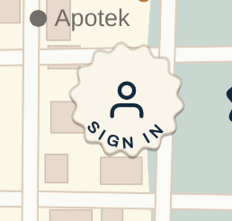
Arrive
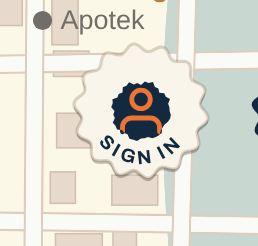
0.06s
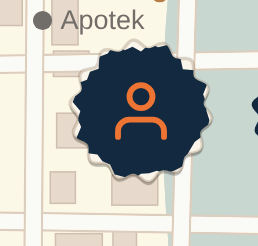
0.13s
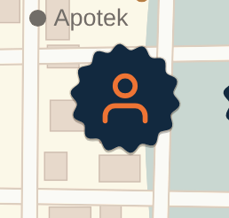
0.25s

Signed in
Your notes, applied: the person is centred and bigger, and SIGN IN is smaller and spaced out so it stops crowding. Three settings of the same badge, so you can pick the balance.
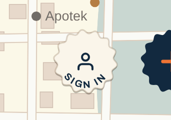
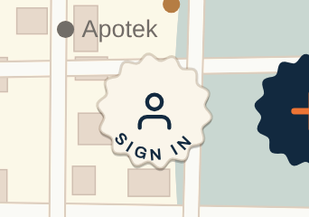
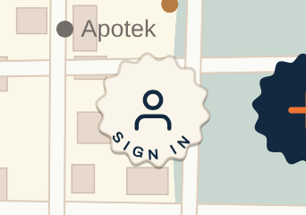
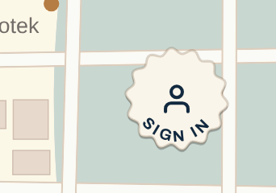
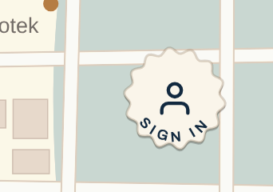
Same as before: navy ink lands and covers the words, and the person grows into your usual badge. Signing out, the ink dries away and the badge is left.




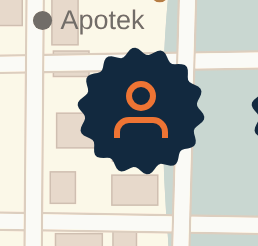
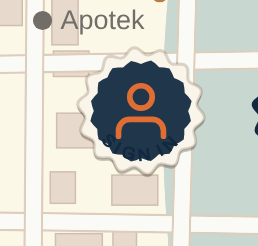
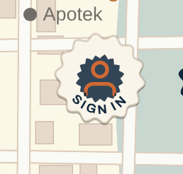
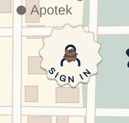